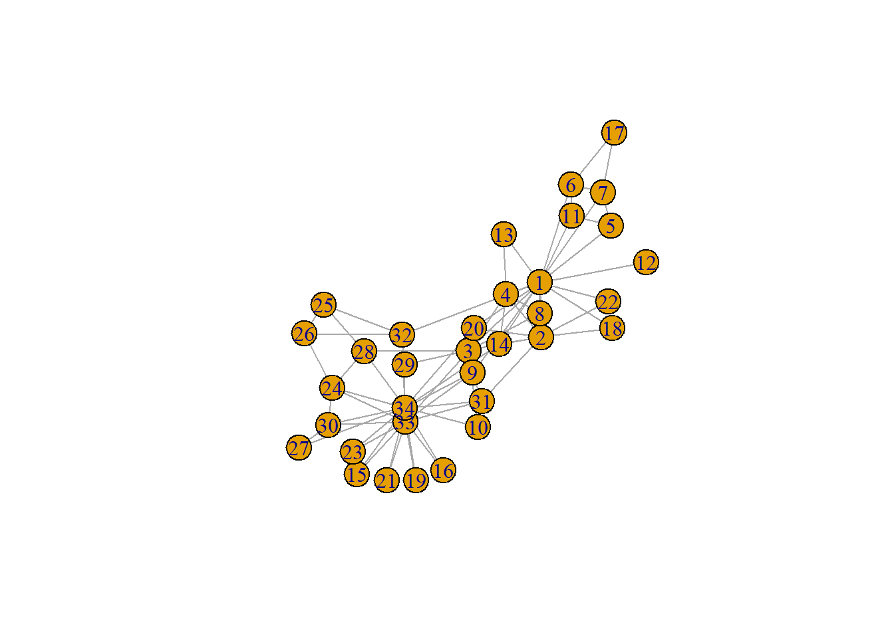
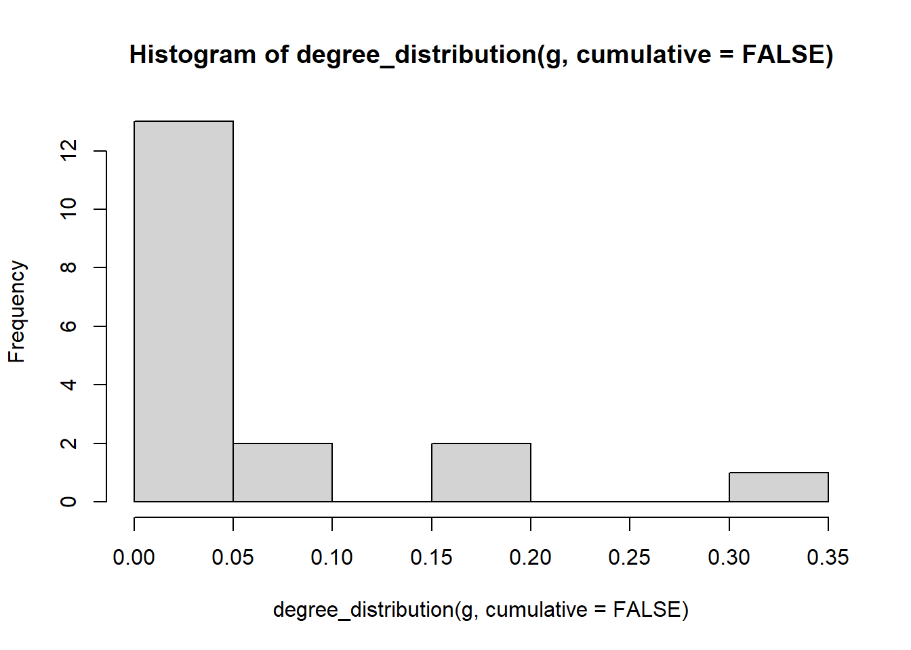

require(igraph)## Loading required package: igraph## Warning: package 'igraph' was built under R version 4.2.2##
## Attaching package: 'igraph'## The following objects are masked from 'package:stats':
##
## decompose, spectrum## The following object is masked from 'package:base':
##
## uniong <- make_graph("Zachary")
plot(g)
gm <- as_adjacency_matrix(
graph = g,
type = c("both"),
attr = NULL,
edges = FALSE,
names = TRUE,
sparse = FALSE
)## Warning in as_adjacency_matrix(graph = g, type = c("both"), attr = NULL, : The `edges` argument of
## `as_adjacency_matrix` is deprecated; it will be removed in igraph 1.4.0isSymmetric(gm)## [1] TRUE# number of nodes
vcount(g)## [1] 34dim(gm)[1]## [1] 34# number of edges (ties)
ecount(g)## [1] 78sum(gm)/2## [1] 78dens <- ecount(g)/((vcount(g) * vcount(g) - vcount(g)) /2)
dens## [1] 0.1390374#ipath density
edge_density(g, loops = FALSE)## [1] 0.1390374degree(
graph = g,
v = V(g),
mode = c("all", "out", "in", "total"),
loops = TRUE,
normalized = FALSE
)## [1] 16 9 10 6 3 4 4 4 5 2 3 1 2 5 2 2 2 2 2 3 2 2 2 5 3 3 2 4 3 4 4 6
## [33] 12 17# Degree is the amount of (undirected) relations a node has. Indegree is the amount of 'incoming' ties, whereas outdegree constitutes the amount of 'outgoing' ties.
degree(g)## [1] 16 9 10 6 3 4 4 4 5 2 3 1 2 5 2 2 2 2 2 3 2 2 2 5 3 3 2 4 3 4 4 6
## [33] 12 17hist (degree_distribution(g, cumulative = FALSE))
# Closeness centrality measures how many steps is required to access every other vertex from a given vertex.
closeness(
g,
vids = V(g),
mode = c("out", "in", "all", "total"),
weights = NULL,
normalized = FALSE,
cutoff = -1
)## [1] 0.01724138 0.01470588 0.01694915 0.01408451 0.01149425 0.01162791 0.01162791 0.01333333
## [9] 0.01562500 0.01315789 0.01149425 0.01111111 0.01123596 0.01562500 0.01123596 0.01123596
## [17] 0.00862069 0.01136364 0.01123596 0.01515152 0.01123596 0.01136364 0.01123596 0.01190476
## [25] 0.01136364 0.01136364 0.01098901 0.01388889 0.01369863 0.01162791 0.01388889 0.01639344
## [33] 0.01562500 0.01666667# Transitivity is the number of transitive triads divided by all possible transitive triads.
transitivity(g, type = c("localundirected"), isolates = c("NaN", "zero"))## [1] 0.1500000 0.3333333 0.2444444 0.6666667 0.6666667 0.5000000 0.5000000 1.0000000 0.5000000
## [10] 0.0000000 0.6666667 NaN 1.0000000 0.6000000 1.0000000 1.0000000 1.0000000 1.0000000
## [19] 1.0000000 0.3333333 1.0000000 1.0000000 1.0000000 0.4000000 0.3333333 0.3333333 1.0000000
## [28] 0.1666667 0.3333333 0.6666667 0.5000000 0.2000000 0.1969697 0.1102941# Betweenness centrality is the amount of times a node is on the route of the shortest path from a node to another node
igraph::betweenness(g, directed = FALSE)## [1] 231.0714286 28.4785714 75.8507937 6.2880952 0.3333333 15.8333333 15.8333333 0.0000000
## [9] 29.5293651 0.4476190 0.3333333 0.0000000 0.0000000 24.2158730 0.0000000 0.0000000
## [17] 0.0000000 0.0000000 0.0000000 17.1468254 0.0000000 0.0000000 0.0000000 9.3000000
## [25] 1.1666667 2.0277778 0.0000000 11.7920635 0.9476190 1.5428571 7.6095238 73.0095238
## [33] 76.6904762 160.5515873# Standardization of betweenness centrality value
# ((value of betweenness node) - minimum value betweenness centrality) / maximum value betweenness centrality - minimum value betweenness centrality